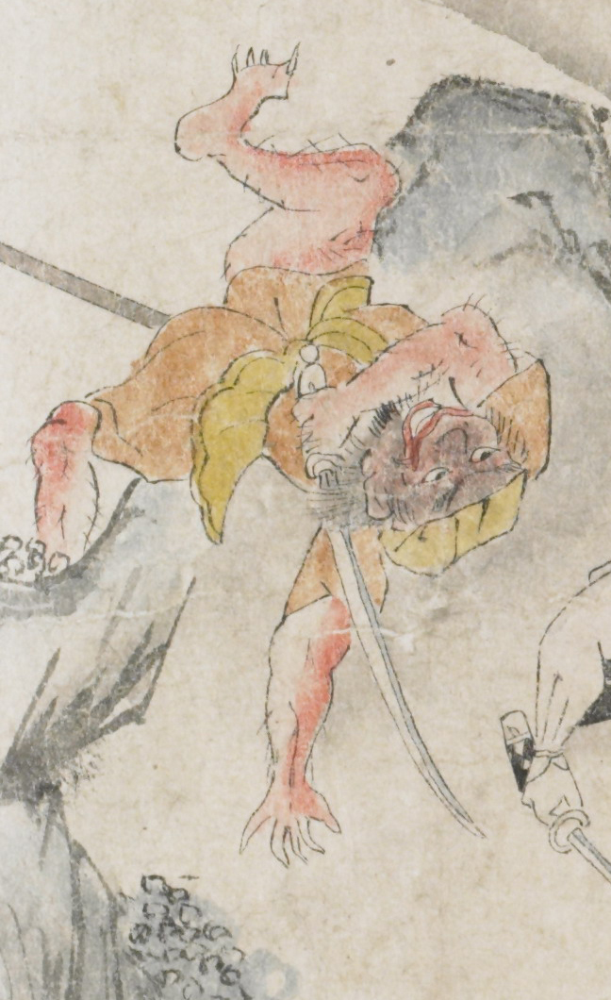

赤い肌の鬼。散切り髪で顎ひげを生やし、唇が赤い。黄色の頭巾と茶色い着物を身につけている。足指の爪が鋭い。右手に刀を持ったまま、左から槍のようなもので突かれて、逆さになって落ちていこうとしている。
著作者：坂本弥一郎徳定／出典：親書誌：U426_nichibunken_0080：伊吹山酒呑童子絵巻；イブキヤマシュテンドウジエマキ／日付：2007／資源識別子：U426_nichibunken_0080_0012_0004
Copyright (c)2010- International Research Center for Japanese Studies, Kyoto, Japan. All rights reserved.